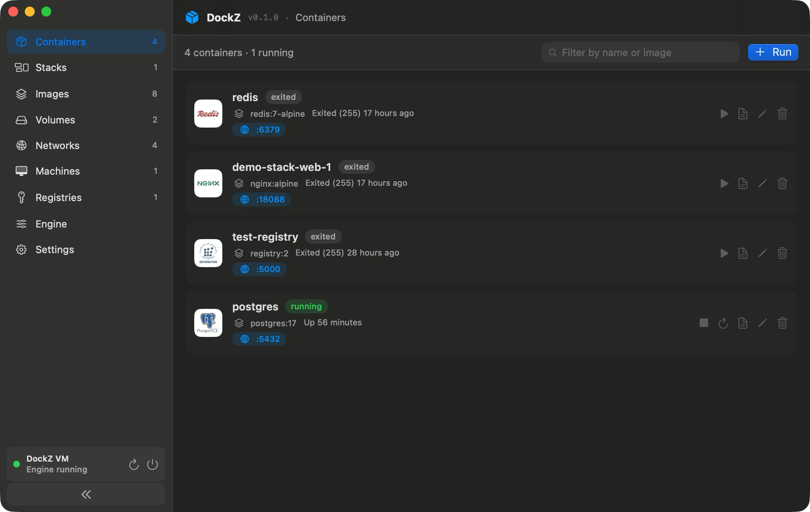
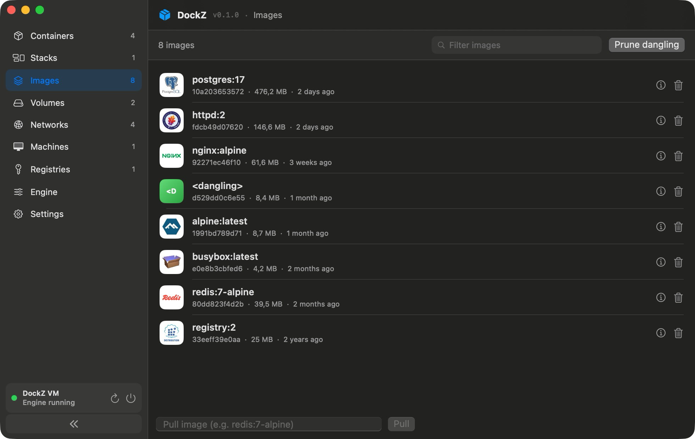
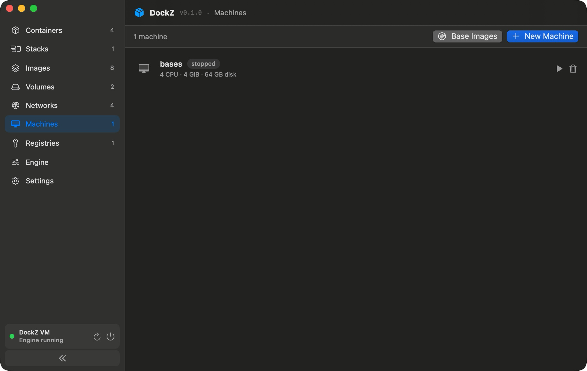
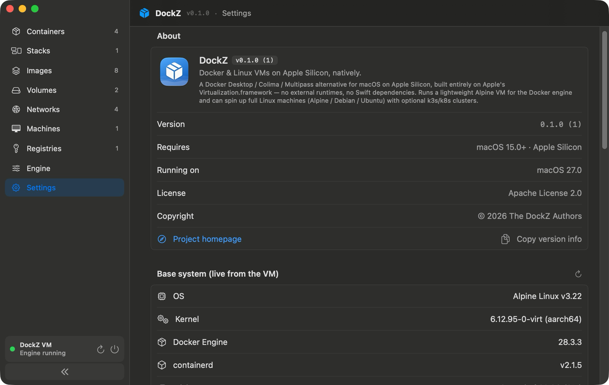
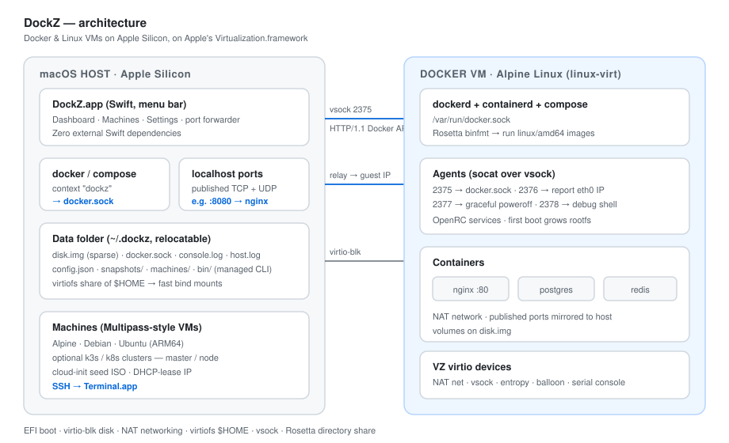

DockZ is a ~5MB menu bar app that runs the real dockerd in a tiny Alpine VM — with a Docker Desktop–style dashboard and Multipass–style Linux machines. One app replaces the whole stack.
Pure SwiftUI on Apple's Virtualization.framework. Manage containers, images, volumes, networks, registries, compose stacks, and Linux machines — all in one window.




vsock, nothing moreThe Docker socket is bridged over vsock. Published ports are mirrored to localhost automatically. $HOME is shared via virtiofs for instant bind mounts.

Upstream dockerd in Alpine. docker, docker compose, and buildx all work — via the dockz context.
Containers, images, volumes, networks, registries, compose stacks. Create / edit forms, live logs, stats, inspect — like Docker Desktop, but it's SwiftUI.
Alpine / Debian / Ubuntu VMs (ARM64) over SSH. One-click k3s / k8s master + node cluster templates. Multipass-style, sharing one NAT network.
First launch builds the guest image in a throwaway netboot VM and fetches the CLI in parallel. When the window closes, docker ps just works.
Published TCP and UDP ports are mirrored to localhost automatically via the Docker events API. Zero config.
Instant APFS copy-on-write snapshots of the VM disk, with rollback. Rosetta for running linux/amd64 images on ARM.
CPUs, RAM, disk limit, virtiofs $HOME share, relocatable data folder (move everything to an external SSD).
No Homebrew required. Fetches the official static docker + compose binaries, checksum-verified, wired into your terminal via a removable ~/.zshrc block.
Only Apple frameworks and the code in this repo. Builds offline with just the Command Line Tools. Auditable in a single sitting.
No accounts, no telemetry, no background updater. Sit down and read the whole codebase in one go.
| DockZ | Docker Desktop | OrbStack | Colima | |
|---|---|---|---|---|
| 💾 App size | ~5 MB | ~1.5 GB+ | several hundred MB | CLI + brew deps |
| 💵 License | Apache 2.0, free | Paid ≥ 250 staff | Closed-source, paid | MIT, free |
| 🐳 Docker engine | ✓ real | ✓ | ✓ | ✓ |
| 🖥️ Linux VMs | ✓ Alpine / Debian / Ubuntu | — | — | — |
| ⚡ Native (no Electron) | ✓ Swift / SwiftUI | — Electron | — | — CLI |
| 🔌 Auto port forward | ✓ TCP + UDP | ✓ | ✓ | Manual |
All you need is macOS 15+, Apple Silicon, and the Command Line Tools. No Homebrew, no admin password.
Auto-signs with an Apple Development cert if found, otherwise ad-hoc.
Required for the com.apple.security.virtualization entitlement.
DockZ grabs the CLI and sets the dockz context for you.
Spin up an Ubuntu VM and SSH straight from Terminal.
Clone, build in a few minutes, uninstall Docker Desktop, and forget Electron ever happened. DockZ runs native, sips RAM, and phones home to nobody.